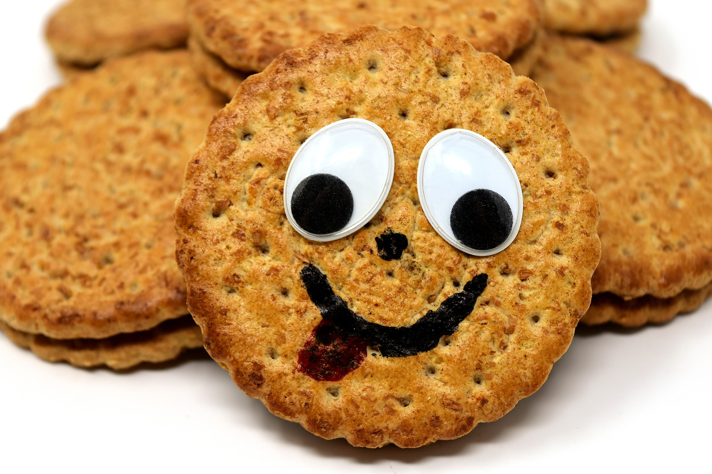

Welcome to the random joke page!
This page has 10 random (not) funniest jokes. Are these funny to you?
Joke 1
Can a kangaroo jump higher than a house?
Of course, a house does not jump at all.
Joke 2
Doctor: "I'm sorry but you suffer from a terminal illness and have only 10 to live."
Patient: "What do you mean, 10? 10 what? Months? Weeks?!"
Doctor: "Nine."
Joke 3
Anton, do you think I'm a bad mother?
My name is Paul.
Joke 4
My dog used to chase people on a bike a lot. It got so bad, finally I had to take his bike away.
Joke 5
Mother: "How was school today, Patrick?"
Patrick: "It was really great mum! Today we made explosives!"
Mother: "Ooh, they do very fancy stuff with you these days. And what will you do at school tomorrow?"
Patrick: "What school?"
Joke 6
Patient: Doctor help me please, every time I drink a cup of coffee I get this intense stinging in my eye.
Doctor: I suggest you remove the spoon before drinking.
Joke 7
Guest at a restaurant: "I refuse to eat this roastbeef. Please call the manager!
"Waiter: "That's no use. He won't eat it either."
Joke 8
Q: What do politicians and diapers have in common?
A: Both should be changed regularly, and both for the same reason.
Joke 9
What goes up and down but never moves?
The stairs!
Joke 10
What is dangerous?
Sneezing while having diarrhea!